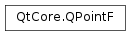

QPointF¶
Synopsis¶
Functions¶
- def
__add__() - def
__add__(, p2) - def
__div__(, divisor) - def
__eq__(, p2) - def
__iadd__(p) - def
__idiv__(c) - def
__imul__(c) - def
__isub__(p) - def
__mul__(, c) - def
__mul__(, m) - def
__mul__(, m) - def
__mul__(, matrix) - def
__mul__(c) - def
__mul__(matrix) - def
__ne__(, p2) - def
__reduce__() - def
__repr__() - def
__sub__() - def
__sub__(, p2) - def
isNull() - def
manhattanLength() - def
setX(x) - def
setY(y) - def
toPoint() - def
toTuple() - def
x() - def
y()
Static functions¶
- def
dotProduct(p1, p2)
Detailed Description¶
The
PySide2.QtCore.QPointFclass defines a point in the plane using floating point precision.A point is specified by a x coordinate and an y coordinate which can be accessed using the
PySide2.QtCore.QPointF.x()andPySide2.QtCore.QPointF.y()functions. The coordinates of the point are specified using floating point numbers for accuracy. ThePySide2.QtCore.QPointF.isNull()function returnstrueif both x and y are set to 0.0. The coordinates can be set (or altered) using thePySide2.QtCore.QPointF.setX()andPySide2.QtCore.QPointF.setY()functions, or alternatively thePySide2.QtCore.QPointF.rx()andPySide2.QtCore.QPointF.ry()functions which return references to the coordinates (allowing direct manipulation).Given a point p , the following statements are all equivalent:
p = QPointF() p.setX(p.x() + 1.0) p += QPointF(1.0, 0.0) #p.rx()++;A
PySide2.QtCore.QPointFobject can also be used as a vector: Addition and subtraction are defined as for vectors (each component is added separately). APySide2.QtCore.QPointFobject can also be divided or multiplied by anintor aqreal.In addition, the
PySide2.QtCore.QPointFclass provides a constructor converting aPySide2.QtCore.QPointobject into aPySide2.QtCore.QPointFobject, and a correspondingPySide2.QtCore.QPointF.toPoint()function which returns aPySide2.QtCore.QPointcopy of this point. Finally,PySide2.QtCore.QPointFobjects can be streamed as well as compared.
-
class
PySide2.QtCore.QPointF¶ -
class
PySide2.QtCore.QPointF(p) -
class
PySide2.QtCore.QPointF(QPointF) -
class
PySide2.QtCore.QPointF(xpos, ypos) Parameters: - QPointF –
PySide2.QtCore.QPointF - xpos –
PySide2.QtCore.qreal - p –
PySide2.QtCore.QPoint - ypos –
PySide2.QtCore.qreal
Constructs a null point, i.e. with coordinates (0.0, 0.0)
See also
Constructs a copy of the given
point.See also
Constructs a point with the given coordinates (
xpos,ypos).- QPointF –
-
PySide2.QtCore.QPointF.__reduce__()¶ Return type: PyObject
-
PySide2.QtCore.QPointF.__repr__()¶ Return type: PyObject
-
static
PySide2.QtCore.QPointF.dotProduct(p1, p2)¶ Parameters: - p1 –
PySide2.QtCore.QPointF - p2 –
PySide2.QtCore.QPointF
Return type: PySide2.QtCore.qrealQPointF p( 3.1, 7.1); QPointF q(-1.0, 4.1); int lengthSquared = QPointF::dotProduct(p, q); // lengthSquared becomes 26.01
Returns the dot product of
p1andp2.- p1 –
-
PySide2.QtCore.QPointF.isNull()¶ Return type: PySide2.QtCore.boolReturns
trueif both the x and y coordinates are set to 0.0 (ignoring the sign); otherwise returnsfalse.
-
PySide2.QtCore.QPointF.manhattanLength()¶ Return type: PySide2.QtCore.qrealReturns the sum of the absolute values of
PySide2.QtCore.QPointF.x()andPySide2.QtCore.QPointF.y(), traditionally known as the “Manhattan length” of the vector from the origin to the point.See also
-
PySide2.QtCore.QPointF.__ne__(p2)¶ Parameters: p2 – PySide2.QtCore.QPointFReturn type: PySide2.QtCore.bool
-
PySide2.QtCore.QPointF.__mul__(c)¶ Parameters: c – PySide2.QtCore.qrealReturn type: PySide2.QtCore.QPointF
-
PySide2.QtCore.QPointF.__mul__(m) Parameters: m – PySide2.QtGui.QTransformReturn type: PySide2.QtCore.QPointF
-
PySide2.QtCore.QPointF.__mul__(c) Parameters: c – PySide2.QtCore.qrealReturn type: PySide2.QtCore.QPointF
-
PySide2.QtCore.QPointF.__mul__(matrix) Parameters: matrix – PySide2.QtGui.QMatrix4x4Return type: PySide2.QtCore.QPointF
-
PySide2.QtCore.QPointF.__mul__(m) Parameters: m – PySide2.QtGui.QMatrixReturn type: PySide2.QtCore.QPointF
-
PySide2.QtCore.QPointF.__mul__(matrix) Parameters: matrix – PySide2.QtGui.QMatrix4x4Return type: PySide2.QtCore.QPointF
-
PySide2.QtCore.QPointF.__imul__(c)¶ Parameters: c – PySide2.QtCore.qrealReturn type: PySide2.QtCore.QPointFMultiplies this point’s coordinates by the given
factor, and returns a reference to this point. For example:p = QPointF(-1.1, 4.1) p *= 2.5 # p becomes (-2.75, 10.25)
See also
PySide2.QtCore.QPointF.operator/=()
-
PySide2.QtCore.QPointF.__add__(p2)¶ Parameters: p2 – PySide2.QtCore.QPointFReturn type: PySide2.QtCore.QPointFReturns
pointunmodified.
-
PySide2.QtCore.QPointF.__add__() Return type: PySide2.QtCore.QPointF
-
PySide2.QtCore.QPointF.__iadd__(p)¶ Parameters: p – PySide2.QtCore.QPointFReturn type: PySide2.QtCore.QPointFAdds the given
pointto this point and returns a reference to this point. For example:p = QPointF( 3.1, 7.1) q = QPointF(-1.0, 4.1) p += q # p becomes (2.1, 11.2)
See also
PySide2.QtCore.QPointF.operator-=()
-
PySide2.QtCore.QPointF.__sub__()¶ Return type: PySide2.QtCore.QPointF
-
PySide2.QtCore.QPointF.__sub__(p2) Parameters: p2 – PySide2.QtCore.QPointFReturn type: PySide2.QtCore.QPointFThis is an overloaded function.
Returns a
PySide2.QtCore.QPointFobject that is formed by changing the sign of both components of the givenpoint.Equivalent to
QPointF(0,0) - point.
-
PySide2.QtCore.QPointF.__isub__(p)¶ Parameters: p – PySide2.QtCore.QPointFReturn type: PySide2.QtCore.QPointFSubtracts the given
pointfrom this point and returns a reference to this point. For example:p = QPointF( 3.1, 7.1) q = QPointF(-1.0, 4.1) p -= q # p becomes (4.1, 3.0)
See also
PySide2.QtCore.QPointF.operator+=()
-
PySide2.QtCore.QPointF.__div__(divisor)¶ Parameters: divisor – PySide2.QtCore.qrealReturn type: PySide2.QtCore.QPointF
-
PySide2.QtCore.QPointF.__idiv__(c)¶ Parameters: c – PySide2.QtCore.qrealReturn type: PySide2.QtCore.QPointFDivides both x and y by the given
divisor, and returns a reference to this point. For example:p = QPointF(-2.75, 10.25) p /= 2.5 # p becomes (-1.1, 4.1)
See also
PySide2.QtCore.QPointF.operator*=()
-
PySide2.QtCore.QPointF.__eq__(p2)¶ Parameters: p2 – PySide2.QtCore.QPointFReturn type: PySide2.QtCore.bool
-
PySide2.QtCore.QPointF.setX(x)¶ Parameters: x – PySide2.QtCore.qrealSets the x coordinate of this point to the given
xcoordinate.
-
PySide2.QtCore.QPointF.setY(y)¶ Parameters: y – PySide2.QtCore.qrealSets the y coordinate of this point to the given
ycoordinate.
-
PySide2.QtCore.QPointF.toPoint()¶ Return type: PySide2.QtCore.QPointRounds the coordinates of this point to the nearest integer, and returns a
PySide2.QtCore.QPointobject with the rounded coordinates.See also
PySide2.QtCore.QPointF.QPointF()
-
PySide2.QtCore.QPointF.toTuple()¶ Return type: PyObject
-
PySide2.QtCore.QPointF.x()¶ Return type: PySide2.QtCore.qrealReturns the x coordinate of this point.
See also
PySide2.QtCore.QPointF.setX()PySide2.QtCore.QPointF.rx()
-
PySide2.QtCore.QPointF.y()¶ Return type: PySide2.QtCore.qrealReturns the y coordinate of this point.
See also
PySide2.QtCore.QPointF.setY()PySide2.QtCore.QPointF.ry()
© 2018 The Qt Company Ltd. Documentation contributions included herein are the copyrights of their respective owners. The documentation provided herein is licensed under the terms of the GNU Free Documentation License version 1.3 as published by the Free Software Foundation. Qt and respective logos are trademarks of The Qt Company Ltd. in Finland and/or other countries worldwide. All other trademarks are property of their respective owners.